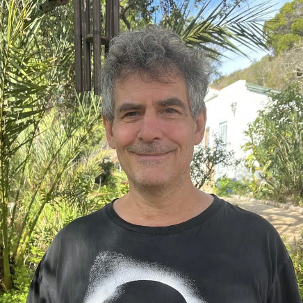
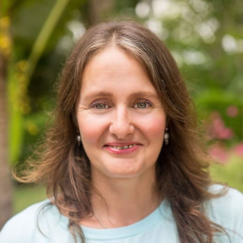
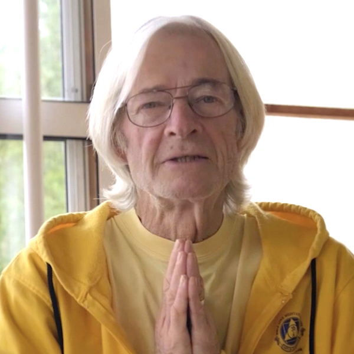
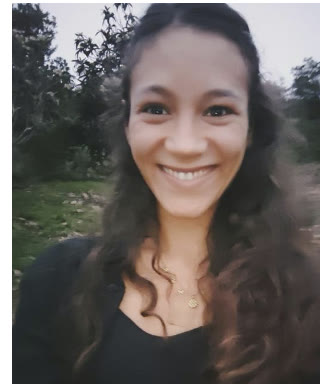
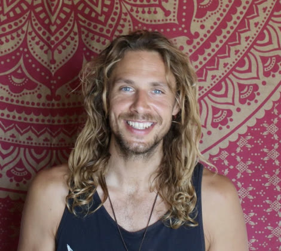

Beyond the fast
Therapies
The clinic
Some things are included. Some you choose yourself.
A juice fast does most of the work on its own, but our small clinic sits right at the heart of the site for anyone who wants more. Some equipment is included in every programme; a wider menu of hands-on therapies from our resident facilitators and visiting specialists can be booked once you’re on site, subject to availability.
Included in your programme
Already part of your stay
Morning Yoga
Accessible daily yoga classes suitable for all levels — we have a rich history with Sivananda yoga, alongside a variety of other approaches and practices.
Evening Meditation & Workshops
Relax and reconnect with a changing mix of evening sessions, from mindfulness and sound healing to fire ceremonies, dance and movement.
Nutrition & Wellness Talks
Learn about the detox process and how to improve your diet and lifestyle at our 4 pm table talks — we like to educate as well as reset you.
QRS Electromagnetic Bed
A pulsed electromagnetic bed with a range of pre-set programmes, free to use during your stay — just ask the team to show you how.
Optional treatments
A wide menu, booked as you go
All optional treatments are €75 for a one-hour session, bookable once you’ve arrived — pick whichever speaks to you, before or after a therapy consultation with the team.
Massage & bodywork
Soft, kneading strokes over the whole body, focusing on the top layer of muscle — a detoxifying massage that improves circulation and flexibility while easing stress and tension.
Releases chronic tension in the deepest layers of muscle, tendon and fascia — a more targeted massage that helps reduce blood pressure and stress hormone levels.
Improves the flow and drainage of lymph around the body — beneficial for reducing water retention, boosting the immune system and improving your metabolic rate.
A deeply relaxing Ayurvedic massage performed by Maeva and Fernando together, with warm herbal oils chosen for your constitution — four hands moving in synchrony invite the nervous system to fully let go.
Traditional pressure and assisted stretching along the body's energy lines, given clothed — as energising as it is relaxing.
A warming oil massage using herbal preparations to ease tired muscles and support the detox process.
Lomi lomi is a traditional Hawaiian massage of continuous, flowing strokes with hands, arms and elbows, treating body and mind as one whole. Balinese detox massage uses skin rolling, kneading and pressure-point work to accelerate the removal of excess water and toxins.
A treatment focused on massaging the abdomen to release restriction between the internal organs — extremely beneficial during the detox process, and for emotional detoxification too.
An Ayurvedic massage of the scalp, face, neck, shoulders and upper back, seated in a chair — it relieves stress, renews energy and helps ease migraines and tension.
Energy & bodywork therapies
A potent form of acupuncture that treats the root cause of imbalance rather than symptoms alone — fine needles at specific points help organs and functions regain balance, and mental and emotional health with them.
A gentle, hands-on approach working with the subtle rhythms of the craniosacral system — light touch that releases deep tension, calms the nervous system and restores balance.
Japanese finger-pressure work along the body's meridians, given clothed — balancing and deeply settling.
Gentle rolling moves over muscles, tendons and ligaments, with resting pauses for the body to respond — often used for back, neck and joint problems, and as a general whole-body tune-up.
An ancient art based on the reflection of the whole body in the feet — stimulating the reflex zones activates the body's self-healing powers, supports the immune system and induces deep relaxation.
An ancient hands-on healing technique channelling energy to where it is most needed, easing physical pain and emotional stress — you stay fully clothed throughout.
A coaching method with no touch required — identifying and transforming weakening influences in the body's energetic field, to resolve disturbing patterns and release stress.
The vagus nerve helps regulate emotion, inflammation, blood pressure and digestion — this massage works from the head down the ears, neck and solar plexus into the abdomen to support it.
Consultations & extras
Time with a qualified nutritionist to explore your diet, lifestyle and overall wellbeing — designed to help you carry what you experience on the retreat into everyday life.
An individual Ayurvedic consultation using pulse diagnosis — exploring your constitution and current state of balance, with personalised guidance on nutrition, daily routine and lifestyle.
A gentle facilitated process that surfaces hidden dynamics within family systems, creating space for resolution and release.
A soothing foot-bath treatment that supports the elimination process during your fast.
Your therapists
The hands you’re in
Every treatment is given by a named practitioner — resident facilitators and long-standing visiting specialists. Meet them here, then book whoever you’re drawn to once you arrive.
Core team

Randi
Randi left Germany sixteen years ago to raise his children in the Algarve's sunshine and unspoilt nature. He trained with our own Trixie a decade back, has added techniques in Portugal, Germany and the UK since, and has practised Reiki for over twenty-five years.

Simone Schwenger
An experienced massage therapist and Chinese Quantum Method coach, Simone originally qualified as a nurse in Germany and ran a busy massage practice in Praia da Luz. She treats in English, German, Portuguese and French.

Karen de Mey
A facilitator here for fifteen years, Karen trained as a Chakra technician with Martin Brofman in 2007. Her gentle sessions read the body as a map of the consciousness within — hands-on healing with no physical manipulation, starting with a prayer and a crystal pendulum.

Maeva & Fernando
Maeva and Fernando share a path dedicated to Ayurveda, conscious touch, yoga and holistic wellbeing. For years they have worked together offering therapies, workshops and retreats — creating a safe space where the body can relax, the mind can slow down, and each person reconnects with their own natural balance.

Richard Brook
At Moinhos Velhos since 2014 and one of your facilitators, Richard is a Five Elements acupuncture specialist, founder of Creative Wellness in London, and author of Understanding Human Nature: A User's Guide to Life. His treatments balance the deeper emotional patterns behind everyday conditions.

Chris (Narayana)
At Moinhos Velhos since 2005, Chris studied under the late renowned dowser-healer Jack Temple and has dowsed for over thirty-five years — from water and life questions to food intolerances, which is very appropriate whilst fasting.
Guest & cover therapists

Mira Lou Kehrer
Born in Germany and raised in France, where she trained at a highly rated massage school, Mira gathered her experience in wellness centres across France and Portugal before settling in the Algarve in 2022. Her personalised sessions begin with a consultation to match the modalities to you.

Philip
An Austrian-trained physiotherapist with more than ten years of clinical experience, Philip has lived in Portugal for five, shaping every session around the person in front of him — combining techniques intuitively rather than applying any single method.
Availability varies through the year — the team will tell you who is on site during your stay and help you choose.
Book a session once you’re here
There’s no need to choose your therapies in advance — settle in first, then talk it through with the team on arrival.